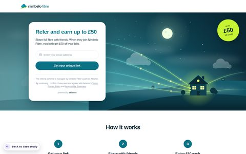
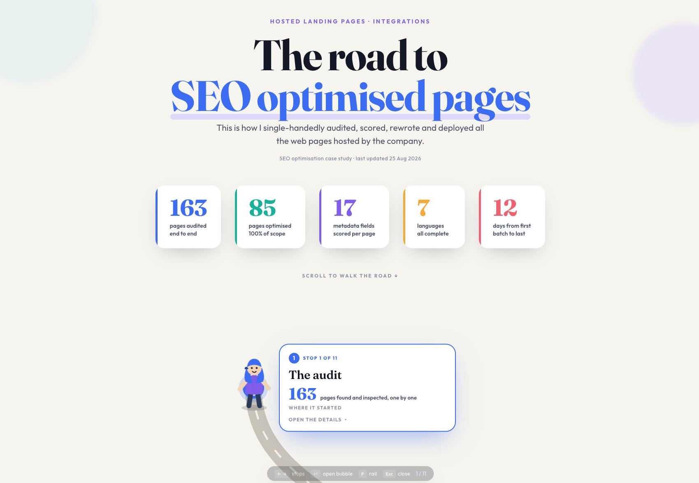
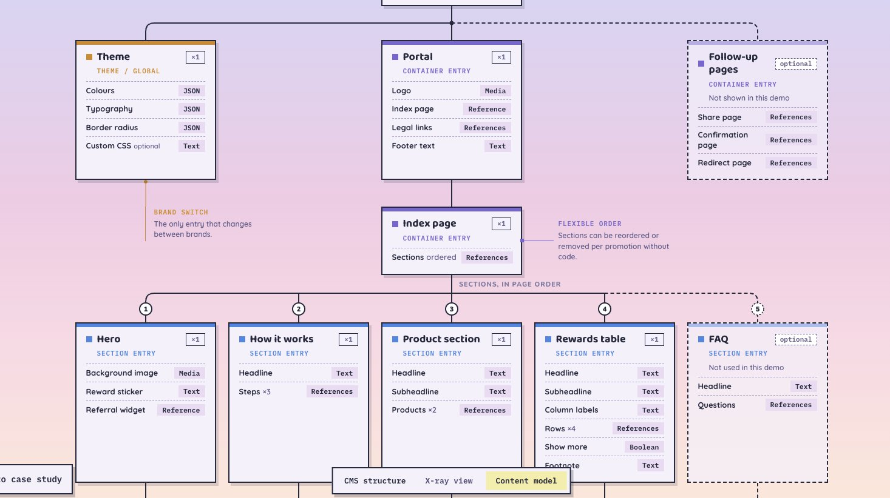
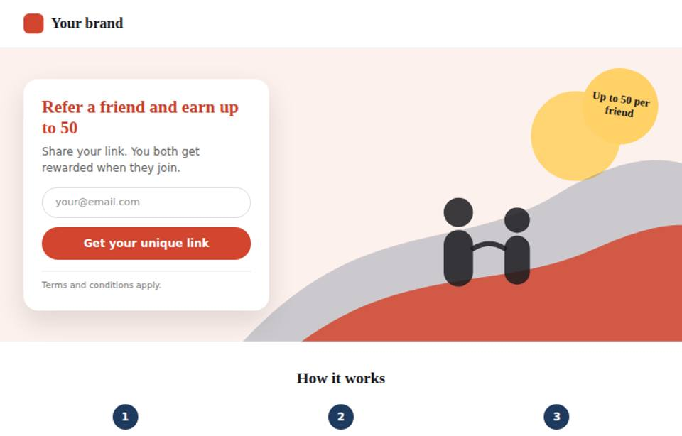
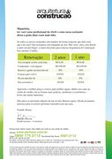
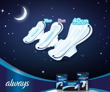
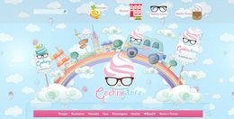

Home
Home
I design and build web experiences. Have a poke around, every window opens!




I design it, I build it, I wire it to the CMS, and I check it works. These are the projects I'd show you over coffee!
See portfolio →


Vintage work: projects from the dial-up era of my career.
See all →Go to a complete content model?
Contact Me
7 items. Click a file to inspect it.
Click to dig. Right-click to flag.
New connection found! Want to get in touch?